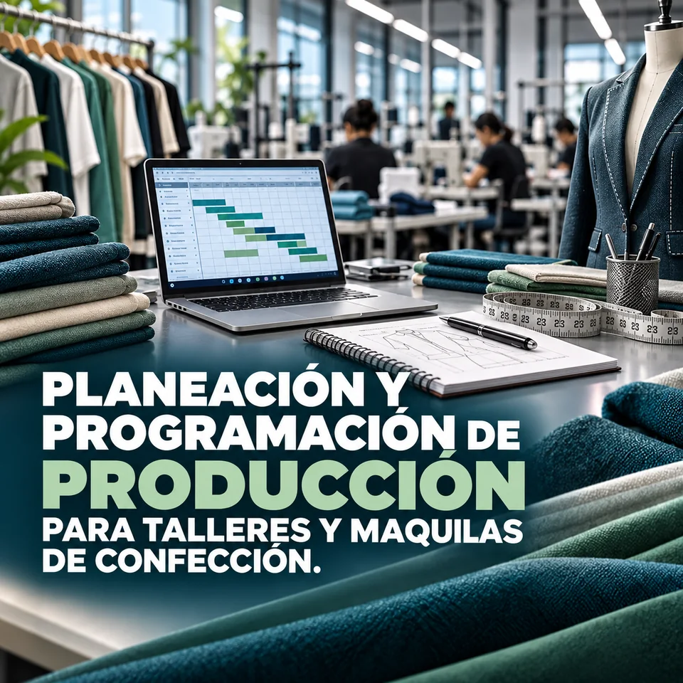
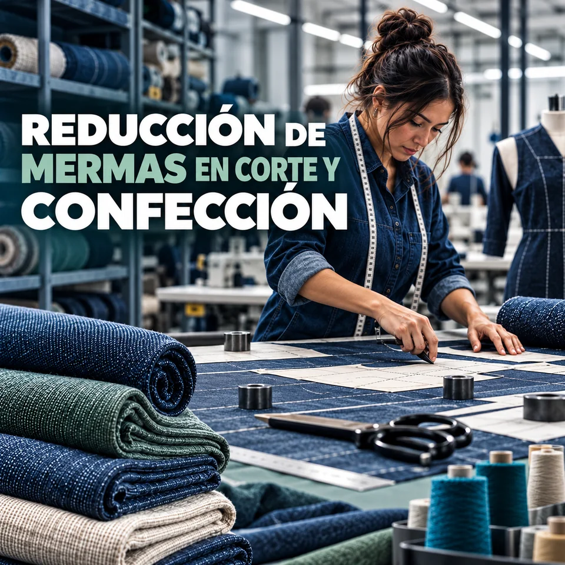
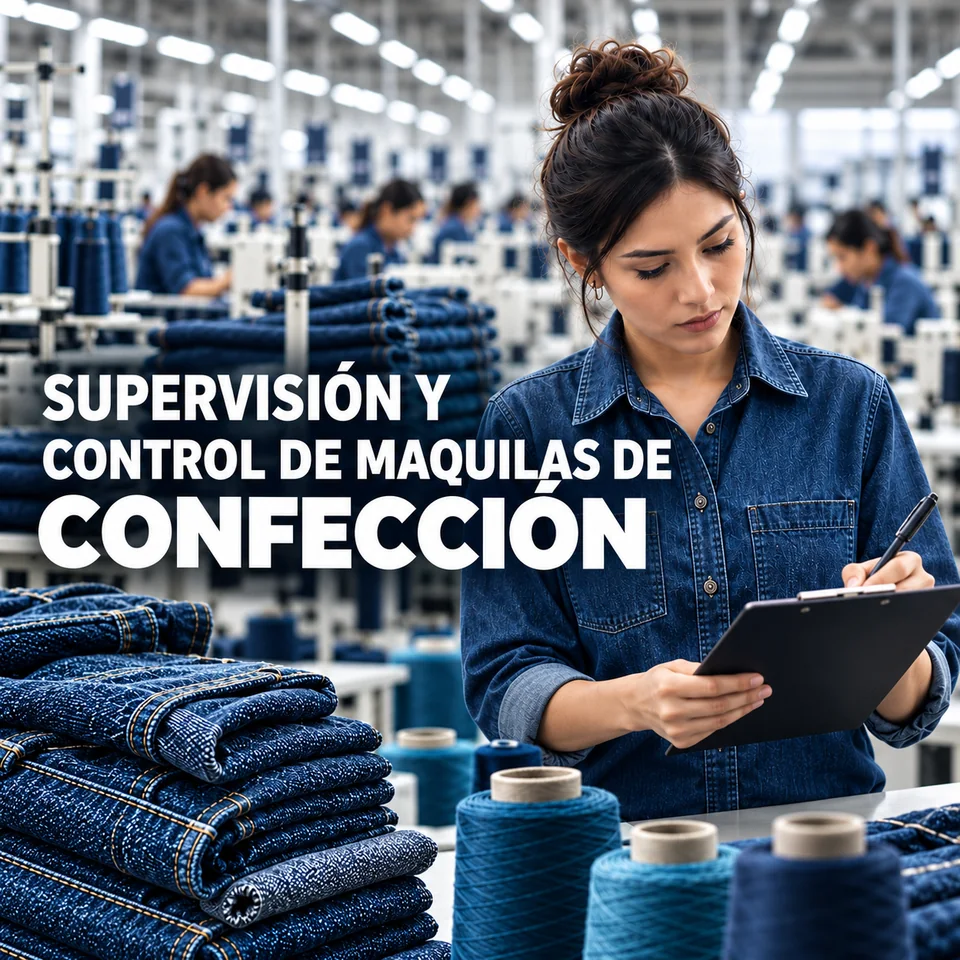

Confección y patronaje
Patronaje industrial y digital, corte, escalado de tallas y lectura de fichas técnicas.
Consultoría y formación para la industria textil
Programas aplicados para supervisar operaciones, mejorar la calidad y tomar decisiones con información real de planta.

HILONOVA conecta dos mundos que rara vez comparten aula: el talento técnico que quiere crecer dentro de la maquila y el emprendedor que necesita convertir una idea en una operación rentable.
Nuestra formación parte del piso de producción y llega hasta la estrategia de marca. Sin teoría decorativa. Con herramientas que se usan al día siguiente.
Rutas de formación
Elige un objetivo para descubrir la formación que mejor acompaña tu siguiente paso.
Para supervisores y equipos de producción
Domina planeación, balanceo, supervisión de líneas, costos y métricas para operar con mayor control, productividad y claridad.
Cinco líneas articuladas para desarrollar capacidad técnica, liderazgo operativo y criterio comercial.
Patronaje industrial y digital, corte, escalado de tallas y lectura de fichas técnicas.
Supervisión, AQL, balanceo de líneas, tiempos, movimientos y mantenimiento.
Lavandería industrial, desgaste, calidad y sustentabilidad hídrica.
Marca propia, costeo real, producción por paquete, maquila y venta en línea.
Introducción a no tejidos y aplicaciones para los sectores automotriz y médico.
 Ver programa ↗
Ver programa ↗
 Ver programa ↗
Ver programa ↗
 Ver programa ↗
Ver programa ↗
 Ver programa ↗
Ver programa ↗

Ver programa ↗
Ver programa ↗Programas para maquilas, lavanderías y talleres que necesitan estandarizar criterios, desarrollar supervisores y elevar el desempeño sin desconectarse de la producción.
Certificación
Cada alumno recibe un certificado digital IPCI con QR y folio verificable: una credencial clara para respaldar capacidades ante empresas, clientes y nuevos proyectos.
Formación para personas y equipos de producción.